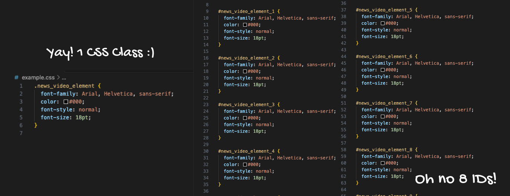

29 March 2024
When should you use a class, and when should you use an ID?
This is the type of question that sometimes still puzzles me when I make an attempt with HTML and CSS, but the more exemplars I find, the easier it is to understand why these two rules exist.
Generally it is said that classes are used for reusable styles, and ID’s are meant for unique elements. This means that classes are a lot more flexible, whereas ID aren’t (they are unique) and should be used sparingly.
But if you can apply styles to either one, when do you use which one and in what scenario? For styling, I like to think of the question “how often does the styling repeat itself?”.
For example, look at this news video section on BBC.com. Each element looks the same.
This can be achieved, because someone created a class, added the styling for this particular class, and then used it for each HTML element of each news video feature. This means the styling of this class has been used at least 5 times on this page alone, but the programmer declared the styling for it once.
Now, imagine if they all used an ID. Of course, that would be possible and would work, but how much extra work and risk of maintenance and mistakes would that cause down the track? My humble answer would be: more than I'd like.
Each element would have to have a unique ID to start with - 5 IDs to be exact. In the CSS, you’d have to write (or copy & paste) the same styling for each ID separately. At the start, that may not look like a big issue because there are just 5 of them right now (and arguably if you’re lazy and wanting to make it easier for yourself, that may be 4 too many already!). But imagine you want to change the styling in a years time. And you have 100 news video elements instead of just 5 of them. I'd imagine that would be quite the hassle!
Instead of having to change the styling in one class declaration in your CSS (which means you’re doing the work once, hooray!), if you've given them IDs instead, you suddenly have to change the styling all 5 or 100 individually! That is not only tedious, but can also invite mistakes, which then would be tricky to find and and correct.

Wouldn’t it be a lot better if you just had one class to debug, maintain and update if you've changed your mind on the styling? When I looked at the code through the dev tools, they used classes instead of several IDs for their styling. They have used ID’s as well, however my guess is that it is for their JavaScript functionality.
This doesn’t mean ID’s are completely useless.
ID’s are handy if you are trying to create anchor-links. If you tried to link a menu item to a class on your site…how would the browser now where to send you if you had 100 elements with the same class? Exactly, it would be confused and my guess is it would go to the first html element with said class selector. It would be a lot better though, if one had more control about where the browser jumps to, rather than just tossing a coin and hoping the browser will land in the right place. So using an ID is appropriate here, a unique selector that one can link to.
Another use, as mentioned above, is utilising ID's for Javascript in order to add interactivity. The ID selector is used by JavaScript to access and manipulate the element with the specific ID. Javascript has specific syntaxes that looks for ID’s, and hence using an HTML ID attribute makes sense here as well.